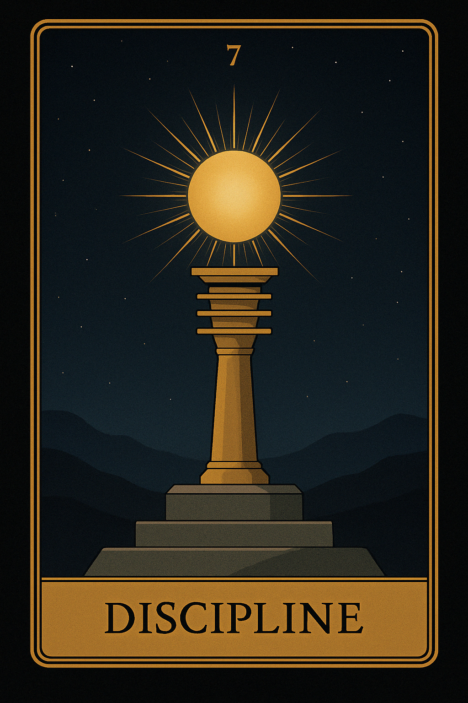
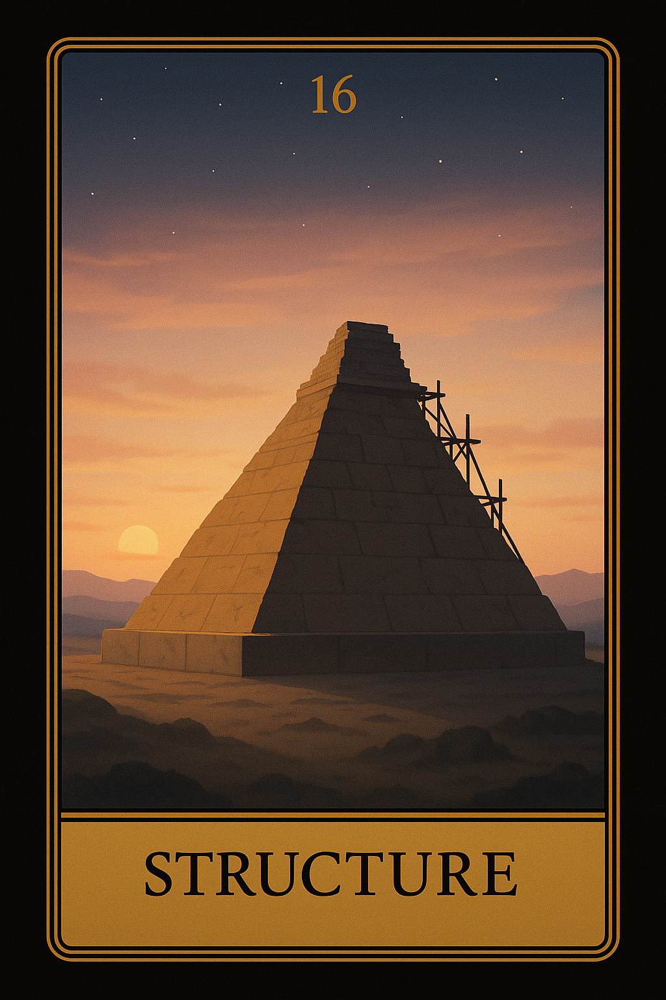
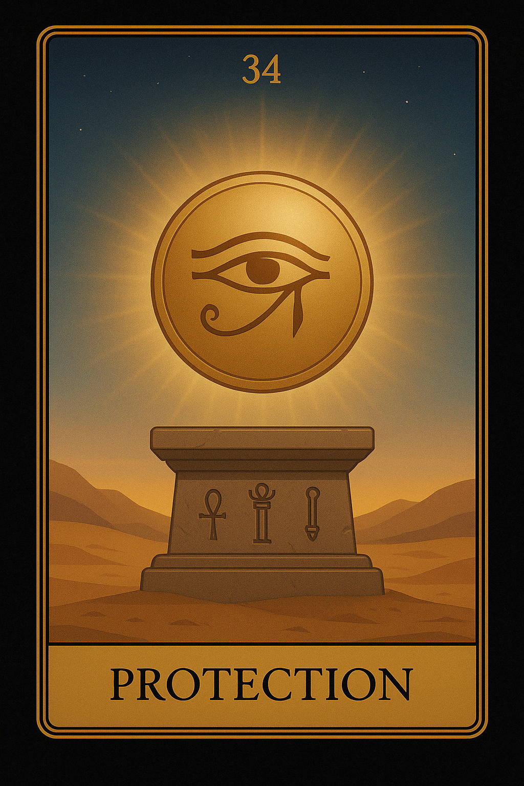
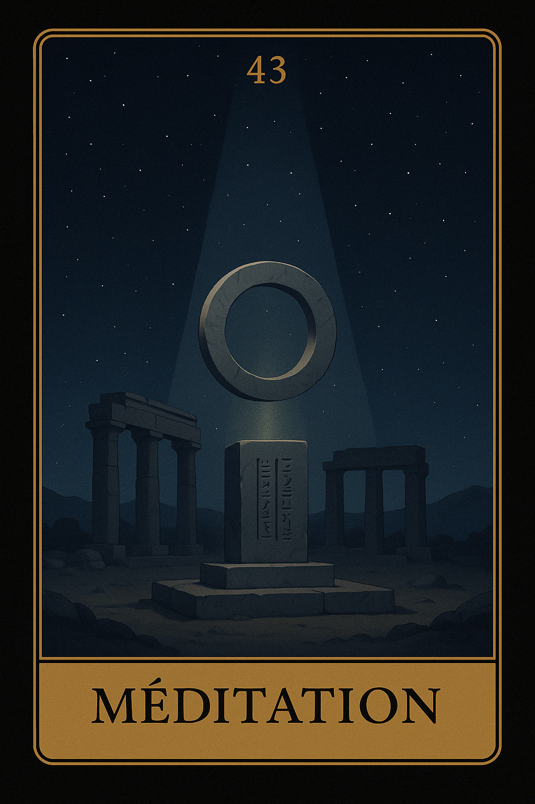
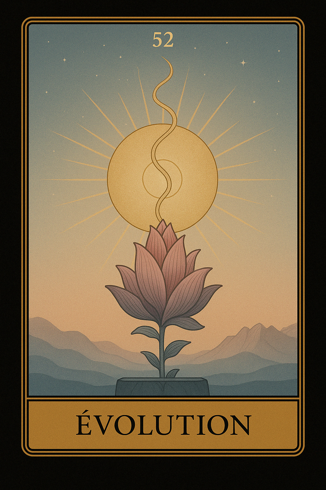
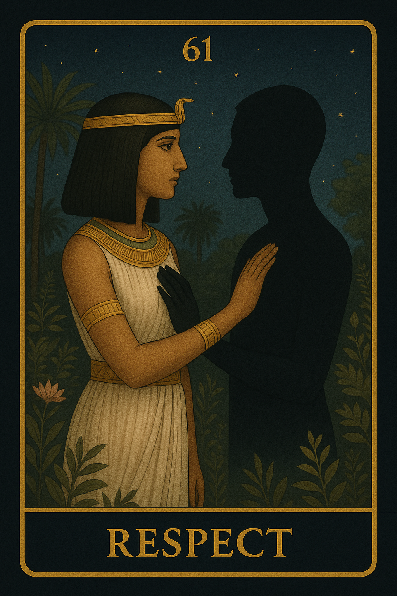
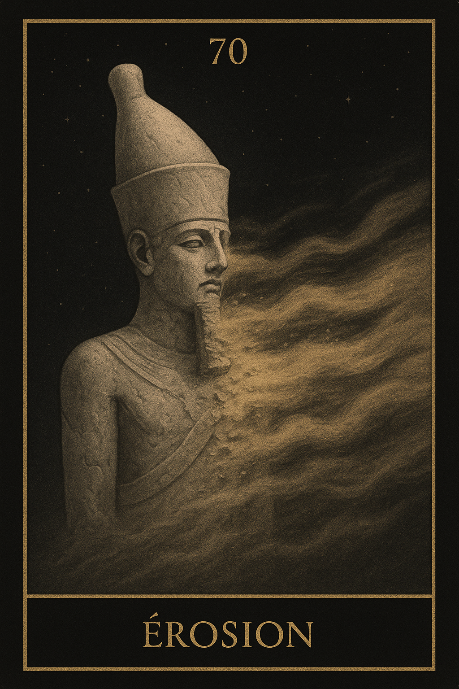
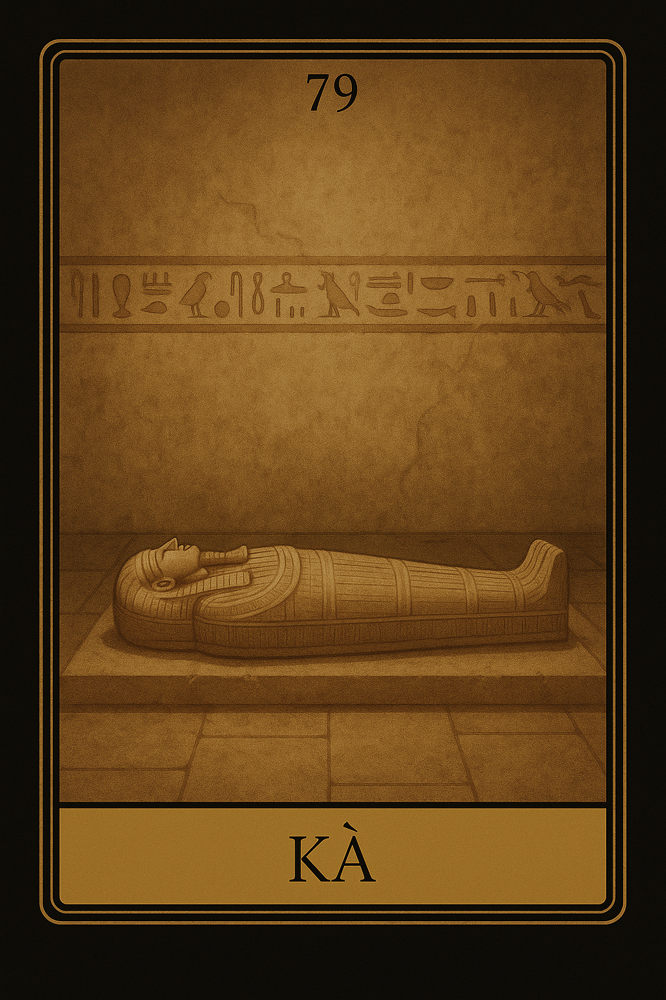

Famille 7 – Osiris (Saturne)
Cette famille explore le passage, la transformation profonde et les cycles de fin et de renaissance. Elle est liée à Saturne et à Osiris, dieu du seuil, de la mémoire et des initiations. Elle éclaire les moments de transition, les ruptures nécessaires et les renaissances intérieures.
Carte 7 – Discipline
Mots-clés : Rigueur, Maîtrise de soi, Engagement, Concentration, Contrôle
Numérologie : 7 – Réflexion, Sagesse, Travail intérieur, Réalisation
Planète principale : Saturne
Divinité principale : Osiris
Planète secondaire : Soleil
Divinité secondaire : Râ
Interprétation de la carte 7 : Discipline (droite)
1. Caractère de la personne
La carte Discipline indique une personne qui a une volonté de fer, capable de maintenir une concentration et un engagement totaux pour atteindre ses objectifs. Sous l’influence de Saturne et de Osiris, cette personne incarne la rigueur, la structure et la responsabilité. Elle est souvent perçue comme fiable, avec une grande capacité à travailler dur et à gérer les défis. Cette carte souligne le besoin de maîtrise de soi et de contrôle, ce qui peut parfois rendre cette personne perfectionniste ou trop stricte envers elle-même ou les autres. Cependant, l’influence du Soleil et de Râ vient adoucir cette rigueur, en apportant de la clarté et de la lumière sur la voie à suivre. La personne peut ainsi naviguer dans les difficultés avec une vision optimiste et une énergie positive.
2. Plan affectif
Sur le plan affectif, Discipline peut symboliser une relation où l’engagement et la responsabilité sont primordiaux. Cela pourrait indiquer une relation qui requiert un travail constant pour rester solide et équilibrée, ou bien une situation où l’un des partenaires fait preuve de rigueur et de contrôle émotionnel pour maintenir l’harmonie. L’influence de Saturne et de Osiris parle de stabilité dans la relation, mais cette stabilité peut parfois être perçue comme restrictive ou rigide. L’influence secondaire du Soleil et de Râ apporte un éclaircissement et une énergie chaleureuse, suggérant qu'un certain équilibre émotionnel peut être trouvé, à condition de se laisser éclairer par la lumière intérieure.
3. Plan matériel
Dans le domaine matériel, Discipline indique une période où il faut faire preuve de rigueur et de patience pour réussir dans des projets. Cela peut aussi signifier que la personne est dans une phase où la concentration et l'engagement total sont nécessaires pour atteindre un objectif financier ou matériel. L’influence de Saturne impose une discipline sévère qui pourrait se traduire par des restrictions financières ou des démarches administratives complexes. Cependant, l’influence du Soleil et de Râ apporte une dimension éclairante à la situation, suggérant que les efforts fournis porteront leurs fruits et que des récompenses matérielles ou des succès financiers peuvent suivre cette période de travail acharné.
4. Plan professionnel
Dans le domaine professionnel, Discipline annonce un engagement total dans un projet ou un poste de travail. Cette carte met en lumière le fait qu’une grande concentration et un travail rigoureux sont nécessaires pour réussir. L’influence de Saturne et de Osiris montre un besoin de structure et de responsabilité, et peut aussi indiquer une personne qui assume des responsabilités importantes. Cependant, l’influence secondaire du Soleil et de Râ suggère que cette approche structurée et rigide peut être récompensée par des avancées significatives, des promotions ou une réalisation professionnelle. Cela peut aussi indiquer un moment où la patience et le travail acharné sont enfin reconnus.
5. Plan spirituel
Spirituellement, Discipline symbolise un engagement sérieux et structuré dans le cheminement spirituel. Cette carte indique un besoin de maîtrise de soi, de concentration, et de travail intérieur pour progresser spirituellement. L’influence de Saturne et de Osiris insiste sur la nécessité de passer par des étapes rigoureuses ou des épreuves spirituelles. Cependant, l’influence du Soleil et de Râ vient apporter une lumière intérieure qui permet à la personne de comprendre profondément les leçons spirituelles et de les intégrer avec une énergie rayonnante. C’est une phase de travail spirituel profond, qui pourrait mener à une révélation ou à un éveil intérieur.
Carte 7 : Discipline (inversée)
Lorsqu'elle est inversée, la carte Discipline indique un manque de contrôle, une disruption dans l’équilibre ou une difficulté à maintenir la rigueur nécessaire pour avancer dans une situation. Cela peut signifier une absence de structure, ou une phase de dispersion, où les objectifs deviennent flous ou les efforts manquent de direction.
1. Caractère de la personne
En position inversée, cette carte peut symboliser une personne qui lutte contre le manque de maîtrise de soi ou une difficulté à se concentrer sur ses objectifs. Elle pourrait être perçue comme déroutée, manquant de rigueur ou d'engagement personnel, ce qui entraîne des résultats limités ou une distraction constante. L'influence de Saturne et de Osiris reste présente, mais elle devient plus oppressive, incitant à un sentiment de frustration ou de manque d'avancement. L’influence du Soleil et de Râ suggère qu'il y a un potentiel de révélation et de clarté, mais la personne doit d'abord retrouver sa direction.
2. Plan affectif
Sur le plan affectif, l’inversion de Discipline indique une relation marquée par des déséquilibres ou un manque de structure. Cela pourrait signifier une relation chaotique, où il y a peu de communication claire, ou une dissipation des efforts communs. L’absence de régularité ou de responsabilité dans la relation peut entraîner des conflits. L'influence de Soleil et de Râ peut apporter une révélation, mais cela dépend de la capacité à rééquilibrer les choses et à trouver un terrain d'entente.
3. Plan matériel
Sur le plan matériel, Discipline inversée montre un manque de structure dans les démarches financières ou les projets matériels. Cela pourrait signifier des obstacles financiers ou des pertes d'opportunités dues à un manque de rigueur dans la gestion. Il peut y avoir une difficulté à se concentrer ou à prendre des décisions concrètes, ce qui rend la situation matérielle instable. Cependant, l'influence du Soleil et de Râ indique que la clarté et la résolution sont possibles, mais la personne doit d'abord trouver un moyen de se recentrer.
4. Plan professionnel
Dans le domaine professionnel, l'inversion de Discipline suggère un manque de rigueur professionnelle ou une désorganisation dans le travail. Cela peut signifier un manque de structure dans la gestion des projets, ce qui entraîne des résultats insuffisants ou des dérives professionnelles. Cependant, l'influence secondaire du Soleil et de Râ permet de remettre les choses en ordre, en offrant éclairage et orientation.
5. Plan spirituel
Spirituellement, l'inversion de Discipline peut symboliser une distraction spirituelle, où la personne a du mal à rester centrée sur son chemin spirituel. Elle pourrait se sentir désorientée ou perdue dans sa quête spirituelle, manquant de structure ou d’un plan clair pour progresser. L'influence de Râ et du Soleil indique qu'un réalignement spirituel est possible, mais cela nécessitera un retour à une pratique rigoureuse et une maîtrise de soi.
Résumé de la carte 7 : Discipline
La carte Discipline, sous l'influence de Saturne et Osiris, symbolise un besoin de structure, de rigueur et d'engagement pour atteindre les objectifs dans tous les domaines de la vie. En position inversée, elle indique des déséquilibres, des manques de structure ou des obstacles liés à une perte de concentration. Cependant, l'influence du Soleil et de Râ donne toujours la possibilité de réaligner les objectifs et de rétablir la maîtrise personnelle nécessaire pour avancer.
Carte 16 – Stucture
Mots-clés : : Fondations solides, Organisation, Stabilité, Planification, Consolidation
Numérologie : 16 – Stabilité, Construire, Structure, Engagement
Planète principale : Saturne
Divinité principale : Osiris
Planète secondaire : Terre
Divinité secondaire : Geb
Interprétation de la carte 16 : Structure (droite)
1. Caractère de la personne
La carte Structure représente une personne dotée d’un fort sens de l'organisation et de la planification. Elle est généralement perçue comme quelqu’un qui bâtit des bases solides avant de se lancer dans un projet ou une aventure. Cette personne aime que les choses soient claires, bien définies et qu'il y ait une stabilité avant d’avancer. Sous l'influence de Saturne / Osiris, cette personne est disciplinée, rigoureuse et très engagée dans ses objectifs à long terme. L'influence de Terre / Geb lui donne une approche pragmatique et réaliste, l’incitant à prendre des mesures concrètes pour établir des fondations solides sur lesquelles elle pourra construire.
2. Plan affectif
Dans le domaine affectif, Structure symbolise une relation où les bases solides sont mises en place avant d’aller plus loin. Il s'agit de bâtir une relation stable et fiable, où chaque partenaire prend le temps de poser les fondations de confiance et de compromis avant de se projeter dans l’avenir. Cette carte indique qu’il est temps d’organiser la relation, d’y mettre de la structure pour éviter les instabilités émotionnelles. L'influence de Saturne / Osiris met l’accent sur le long terme et la durabilité de la relation, tandis que Terre / Geb assure que cette structure soit réaliste et pragmatique, sans précipitation.
3. Plan matériel
Sur le plan matériel, Structure symbolise la construction de fondations solides dans le monde physique. Cela peut concerner la mise en place d’un projet professionnel, la gestion financière ou l’aménagement de son environnement. Cette carte montre qu’il est nécessaire de planifier et de consolider ses efforts pour bâtir quelque chose qui dure dans le temps. Saturne / Osiris encourage à être discipliné et à respecter les étapes nécessaires pour atteindre des objectifs durables, tandis que Terre / Geb favorise une approche pratique et réaliste pour établir des bases solides.
4. Plan professionnel
Dans le domaine professionnel, Structure représente un moment où l’on doit bâtir des bases solides pour réussir sur le long terme. Cela peut signifier qu'il est nécessaire de mettre en place une stratégie claire, de planifier les étapes futures et de consolider ses acquis pour assurer une croissance stable. Cette carte invite à structurer un plan de carrière de manière détaillée, en prenant soin de solidifier chaque aspect avant de poursuivre plus avant. L'influence de Saturne / Osiris inspire à être méthodique et à faire les efforts nécessaires pour atteindre le succès à long terme, et Terre / Geb nous rappelle de rester ancré et réaliste dans cette approche.
5. Plan spirituel
Spirituellement, Structure symbolise la nécessité de poser des bases solides dans sa quête spirituelle. Cela peut être un appel à rechercher la stabilité intérieure et à planifier son chemin spirituel avec discipline et rigueur. La carte suggère de se concentrer sur des pratiques stables, telles que la méditation, la prière ou la réflexion spirituelle, qui nous aideront à établir une fondation solide pour notre développement spirituel. L’influence de Saturne / Osiris nous invite à prendre notre évolution spirituelle au sérieux, en restant engagé et discipliné, tandis que Terre / Geb nous rappelle que la spiritualité doit être intégrée dans la réalité de notre vie quotidienne.
Carte 16 : Structure (inversée)
Lorsqu'elle est inversée, Structure symbolise une instabilité ou un manque de fondation dans un projet, une relation ou une situation. Cela peut signifier que les bases ne sont pas solidement posées, ce qui rend la situation fragile ou instable. Cette inversion indique également une résistance à la discipline ou à l’organisation, ce qui entraîne un manque de structure et de clarté dans la situation. Les choses peuvent se sentir désorganisées ou fragiles et nécessitent une réévaluation des bases.
1. Caractère de la personne
En position inversée, Structure peut représenter une personne qui manque de discipline ou qui n’a pas posé de bases solides pour ses projets ou sa vie en général. Elle peut être désorganisée, avoir du mal à établir une vision claire et se retrouver dans une situation où elle est vulnérable ou instable. Cela peut aussi signifier une personne qui rejette la stabilité ou qui a du mal à s’engager dans un plan structuré, laissant les choses s’effondrer.
2. Plan affectif
Sur le plan affectif, Structure inversée peut symboliser une relation où les bases de confiance ou de communication sont fragiles ou inexistantes. Cela peut être une relation qui manque de structure, où les deux partenaires n’ont pas construit de bases solides pour aller de l’avant. La carte peut également indiquer une situation où les attentes sont mal définies et où il y a déséquilibre émotionnel. Cette carte invite à remettre de l’ordre et à poser des fondations claires dans la relation.
3. Plan matériel
Dans le domaine matériel, Structure inversée suggère que les bases pratiques sur lesquelles repose un projet ou une situation sont instables ou mal établies. Cela pourrait signifier un manque de planification dans un projet professionnel ou personnel, ou une insuffisance de préparation qui entraîne des difficultés dans la gestion des finances, des ressources ou du travail. La carte indique qu’il est nécessaire de revoir les fondations et de les consolider avant de continuer à avancer.
4. Plan professionnel
Professionnellement, Structure inversée peut signifier une situation où les bases du projet professionnel sont fragiles ou mal définies. Il peut y avoir des retards, un manque de planification ou un manque d’organisation qui empêche l’avancée d’un projet. Cela peut aussi signifier qu’un projet échoue ou n’arrive pas à prendre forme faute d'une structure solide. Il est crucial de revoir les fondations et de remettre les plans en place avant de tenter d’aller plus loin.
5. Plan spirituel
Spirituellement, Structure inversée indique que la personne manque de discipline spirituelle ou d’une fondation solide dans sa pratique spirituelle. Cela pourrait être une phase où l'on rejette les pratiques stables ou où l’on se trouve dans un déséquilibre spirituel, sans savoir comment avancer. L’inversion de cette carte demande à la personne de restructurer son chemin spirituel, de poser des bases solides et de revenir à une pratique plus structurée et réaliste.
Résumé de la carte 16 : Structure
La carte Structure symbolise le bâtissage de fondations solides avant de poursuivre un projet ou une relation. En position inversée, elle indique un manque de stabilité, un déséquilibre ou une absence de préparation qui freine la progression. La carte suggère qu’il est nécessaire de réévaluer les fondations et de créer des bases solides avant de pouvoir avancer de manière réussie.
Carte 25 – Patience

Mots-clés : : Attente, Temps, Réflexion, Récompense future, Détente
Numérologie : 25 – Temps, Réflexion, Attente constructive, Récompense après l'effort
Planète principale : Saturne
Divinité principale : Osiris
Planète secondaire : Jupiter
Divinité secondaire : Amon-Rê
Interprétation de la carte 25 : Patience (droite)
1. Caractère de la personne
La carte Patience symbolise une personne dotée d'une grande capacité à attendre et à réfléchir avant d'agir. Cette personne sait que tout a son temps et que les grandes choses prennent du temps pour se manifester. Sous l'influence de Saturne / Osiris, elle possède une approche disciplinée et mature de la vie, prête à investir longtemps avant de récolter les bénéfices. Elle a compris que la récompense vient à ceux qui savent être patients et persévérants. Jupiter / Amon-Rê en influence secondaire élargit cette vision à une compréhension plus large du temps et de la récompense future, offrant une perspective optimiste pour l’avenir, même si le chemin semble long.
2. Plan affectif
Sur le plan affectif, Patience indique une relation où le temps est nécessaire pour que les choses se développent. Cela peut signifier que la personne attend que la relation évolue naturellement, sans pression ni hâte. Elle peut également traverser une période où les émotions ou les problèmes relationnels ont besoin de temps pour se résoudre. Cette carte évoque l’idée qu’il ne faut pas forcer les choses et que l’univers œuvre dans son propre rythme pour apporter des récompenses futures en matière de relation. Saturne / Osiris aide à bâtir des relations solides, tandis que Jupiter / Amon-Rê apporte une vision plus optimiste et patiente, affirmant que l’amour se construit avec le temps.
3. Plan matériel
Dans le domaine matériel, Patience représente une phase où les progrès sont lents mais sûrs. Cela peut signifier que les efforts financiers ou professionnels de la personne ne produisent pas de résultats immédiats, mais que les récompenses futures en valent la peine. La carte invite à ne pas se précipiter dans les décisions matérielles ou professionnelles, et à laisser faire le temps. Saturne / Osiris soutient une approche plus pragmatique et planifiée des efforts, tandis que Jupiter / Amon-Rê encourage à avoir une vision optimiste des bénéfices futurs issus de cette attente constructive.
4. Plan professionnel
Professionnellement, Patience annonce que le succès prendra du temps et que la réalisation de projets ou d’objectifs de carrière nécessitera une attente réfléchie. La personne doit être prête à travailler dur sans attendre de résultats immédiats. Cela peut indiquer qu’il est important de bâtir des bases solides et de laisser les choses se développer lentement mais sûrement. Saturne / Osiris apporte la discipline nécessaire à ce travail, tandis que Jupiter / Amon-Rê offre une perspective positive pour l'avenir, assurant que la récompense professionnelle viendra avec le temps et la persévérance.
5. Plan spirituel
Spirituellement, Patience invite à laisser le temps faire son travail. Cela symbolise un chemin spirituel où la révélation et l’évolution intérieure prennent du temps. La personne peut être dans une phase de réflexion profonde, cherchant à se comprendre et à se transformer, mais sans pression ni attente immédiate. L’influence de Saturne / Osiris soutient cette démarche en apportant une discipline intérieure, tandis que Jupiter / Amon-Rê élargit cette vision spirituelle, offrant une compréhension positive que chaque étape spirituelle est nécessaire pour une croissance à long terme.
Carte 25 : Patience (inversée)
Lorsqu'elle est inversée, Patience symbolise une impatience ou un sentiment de frustration lié au manque de résultats immédiats. Cela peut signifier que la personne devient impatiente ou perd l'espoir en raison de la lenteur des progrès. L'inversion de cette carte peut indiquer qu’il est nécessaire de relâcher la pression et d’accepter que certaines choses ne puissent pas être forcées. Cela peut aussi suggérer un manque de persévérance ou de discipline dans l’attente des résultats, ou un besoin de revoir les attentes et les priorités.
1. Caractère de la personne
En position inversée, Patience peut symboliser une personne qui perd sa patience et se laisse décourager par la lenteur des progrès. Elle peut être impatiente, cherchant à forcer les choses, ce qui peut conduire à frustration et insatisfaction. Cette personne pourrait également se retrouver déséquilibrée dans son approche de la vie, cherchant à obtenir des résultats immédiats au lieu de se concentrer sur une approche plus réfléchie et long terme.
2. Plan affectif
Sur le plan affectif, Patience inversée représente une relation où l’un des partenaires (ou les deux) devient impatient ou frustré par le manque de progrès. Cela peut signifier que la relation traverse une phase où l'attente semble trop longue, ce qui engendre de l'inquiétude ou de l'irritation. Cette carte inversée incite à revoir les attentes et à comprendre que les relations demandent parfois du temps pour se développer et qu’il est essentiel de ne pas forcer les choses.
3. Plan matériel
Dans le domaine matériel, Patience inversée peut symboliser un sentiment de frustration face à une situation où les résultats financiers ou matériels semblent lents à venir. Cela pourrait être un signe de pression excessive sur la personne pour qu'elle obtienne des résultats immédiats, ce qui peut nuire à ses progrès. La carte inversée suggère de ralentir, de revoir les priorités et d’avoir la discipline nécessaire pour surmonter cette phase d’attente sans se laisser emporter par l’impatience.
4. Plan professionnel
Professionnellement, Patience inversée indique une insatisfaction liée à la lenteur des progrès dans un projet. Cela peut représenter un sentiment de blocage professionnel ou un retard dans l’atteinte des objectifs. L’inversion de cette carte appelle à réévaluer les actions entreprises, à revoir les objectifs et à ne pas se laisser submerger par la frustration. Il est important de rester discipliné et de comprendre que certaines choses prennent plus de temps que prévu.
5. Plan spirituel
Spirituellement, Patience inversée symbolise une perte de foi ou une impatience spirituelle. La personne pourrait se sentir découragée par le manque de progrès spirituel immédiat. Cela pourrait également être un signe de déséquilibre intérieur, où la personne essaie de forcer un changement spirituel au lieu de laisser les choses se manifester naturellement. La carte inversée encourage à retrouver la foi dans le processus et à ne pas se laisser envahir par l’impatience dans la quête spirituelle.
Résumé de la carte 25 : Patience
La carte Patience symbolise la capacité à attendre et à laisser le temps faire son travail pour que les choses se réalisent naturellement. En position inversée, elle représente une impatience ou un manque de persévérance, incitant à réévaluer les attentes et à rester dans la discipline. Cette carte rappelle l’importance de comprendre que certaines choses nécessitent temps et réflexion avant d'atteindre les résultats souhaités.
Carte 34 – Protection
Mots-clés : : Sécurité, Guérison, Soutien divin, Réconfort, Stabilité
Numérologie : 34 – Sécurité intérieure, Guérison spirituelle, Soutien divin, Protection contre les épreuves
Planète principale : Saturne
Divinité principale : Osiris
Planète secondaire : Mars
Divinité secondaire : Sekhmet
Interprétation de la carte 34 : Protection (droite)
1. Caractère de la personne
La carte Protection symbolise une personne qui bénéficie d’une force intérieure exceptionnelle et qui sait se protéger dans les moments difficiles. Cette carte indique que la personne est entourée d'une énergie protectrice qui lui permet de surmonter les épreuves sans se laisser submerger. L'influence de Saturne / Osiris ajoute une dimension de stabilité et de résilience, rappelant à la personne qu’elle peut toujours compter sur ses ressources intérieures et que les épreuves sont temporaires. Sous l’influence de Mars / Sekhmet, cette carte souligne également la capacité à faire face aux défis avec courage et à protéger son espace émotionnel en restant ferme dans ses convictions.
2. Plan affectif
Sur le plan affectif, Protection indique une relation où l’on se sent soutenu et en sécurité. Cela peut symboliser un moment où les liens affectifs apportent du réconfort et de la guérison. Cette carte suggère que la personne est dans une relation où elle se sent protégée et aimée, et où les obstacles affectifs peuvent être surmontés avec le soutien de son partenaire ou de proches. L'influence de Mars / Sekhmet dans ce contexte renforce l'idée que la force et la détermination dans la relation sont présentes, permettant de traverser les épreuves ensemble, en restant solidaires et engagés.
3. Plan matériel
Dans le domaine matériel, Protection indique un moment où la personne peut ressentir un sentiment de sécurité dans ses finances ou dans la gestion de ses biens. Cette carte symbolise un soutien externe (comme une aide financière, un contrat solide ou un système de sécurité bien en place) qui protège la personne dans ses affaires matérielles. Sous l'influence de Saturne / Osiris, cette sécurité est souvent le résultat d’un travail constant et patient, et l’influence de Mars / Sekhmet soutient l’idée de protéger ses intérêts matériels avec détermination et stratégie.
4. Plan professionnel
Professionnellement, Protection symbolise une situation où la personne bénéficie d’une stabilité professionnelle. Cela peut indiquer que la personne travaille dans un environnement sûr, où elle se sent soutenue par son entourage professionnel ou par des mesures de sécurité en place. Cette carte peut également suggérer que des opportunités de guérison sont présentes dans la carrière, qu’il s’agisse de se rétablir après un échec ou de surmonter des obstacles professionnels. L’influence de Mars / Sekhmet met l’accent sur la détermination et la force intérieure pour défendre ses intérêts professionnels et se protéger dans un environnement de travail.
5. Plan spirituel
Spirituellement, Protection symbolise le soutien divin et la protection spirituelle dont la personne bénéficie. Cela représente un moment où la personne se sent guidée et protégée par des forces supérieures. Cette carte indique que, même dans les moments difficiles, la personne peut compter sur des ressources spirituelles pour surmonter ses épreuves. L'influence de Saturne / Osiris soutient cette idée de guérison spirituelle et de sécurité divine dans le processus de croissance spirituelle. Mars / Sekhmet ajoute une énergie de protection active, signifiant que la personne peut affronter les défis spirituels avec courage et résilience.
Carte 34 : Protection (inversée)
Lorsqu'elle est inversée, Protection peut symboliser une insécurité émotionnelle ou matérielle, ou le sentiment de ne pas être protégé dans une situation. Cela peut représenter un manque de soutien, une perte de confiance dans les forces extérieures ou un sentiment de vulnérabilité face aux événements extérieurs. Cette carte inversée indique qu'il est nécessaire de retrouver une source de sécurité intérieure, de rechercher le soutien spirituel ou de renforcer les protections matérielles pour surmonter la période d’incertitude.
1. Caractère de la personne
En position inversée, Protection peut symboliser une personne qui se sent fragile ou exposée face aux défis de la vie. Cette carte pourrait indiquer une personne qui a du mal à se sentir soutenue ou protéger ses intérêts, en raison de doutes ou de peurs. L’inversion de cette carte appelle à renforcer sa confiance intérieure et à rechercher des moyens pour se sentir plus stable et protégé.
2. Plan affectif
Sur le plan affectif, Protection inversée peut indiquer une relation où l’on se sent exposé ou vulnérable. Cela peut signifier que la personne se sent manipulée ou non soutenue dans une relation, ou que les échanges affectifs sont marqués par un manque de confiance. Cette carte inversée appelle à se protéger émotionnellement tout en cherchant à réparer les liens pour renforcer les relations affectives.
3. Plan matériel
Dans le domaine matériel, Protection inversée symbolise une période où la personne se sent insécure ou vulnérable dans ses affaires ou sa situation financière. Cela peut être le résultat d’une perte de contrôle ou d’un manque de soutien dans les projets matériels. L’inversion de cette carte incite à renforcer les mesures de sécurité, à rechercher des ressources extérieures et à se protéger des risques matériels.
4. Plan professionnel
Professionnellement, Protection inversée peut signifier une situation de vulnérabilité dans le travail, où la personne se sent exposée à des risques ou insécurisée dans son environnement professionnel. Cela peut aussi symboliser un manque de soutien dans la carrière ou une période de défi dans laquelle la personne se sent seule. L'inversion appelle à renforcer sa position professionnelle et à chercher des alliances solides pour se protéger dans le milieu du travail.
5. Plan spirituel
Spirituellement, Protection inversée symbolise un sentiment de déconnexion avec le divin ou une période d'isolement spirituel. La personne peut se sentir perdue ou démunie face à des défis spirituels. Cette carte inversée incite à retrouver la foi et à rechercher activement le soutien spirituel pour surmonter les épreuves et rétablir une connexion profonde avec la source divine.
Résumé de la carte 34 : Protection
La carte Protection symbolise un soutien divin et un refuge sécurisant dans les moments difficiles. Elle indique que la personne est protégée, même face aux épreuves. En position inversée, elle met en lumière une insécurité émotionnelle ou matérielle, incitant la personne à renforcer sa sécurité et à rechercher du soutien extérieur pour retrouver l’équilibre.
Carte 43 – Méditation
Mots-clés : : Méditation, Introspection, Concentration, Prudence, Réévaluation
Numérologie : 43 – Réflexion intérieure, Prudence avant l’action, Clarté dans le chaos, Évaluation des options
Planète principale : Saturne
Divinité principale : Osiris
Planète secondaire : Mercure
Divinité secondaire : Thot
Interprétation de la carte 43 : Méditation (droite)
1. Caractère de la personne
La carte Méditation symbolise une personne qui est dans un moment de réflexion profonde. Elle prend du temps pour s'introspecter et évaluer la situation dans laquelle elle se trouve. Sous l’influence de Saturne / Osiris, cette carte évoque une prude introspection et un retour aux racines, où la personne cherche à comprendre les leçons du passé et à évaluer ses choix futurs. L’influence de Mercure / Thot soutient cette réflexion avec une approche analytique, offrant une clarté mentale et une capacité à voir les choses sous différents angles. Cette carte indique que la personne est dans une phase où elle doit prendre du recul, éviter la précipitation et s’assurer que ses décisions sont bien réfléchies.
2. Plan affectif
Sur le plan affectif, Méditation représente une période de réflexion dans une relation. Cela peut indiquer que la personne prend du recul pour réévaluer la relation, ses attentes et ses sentiments. Il peut s’agir d’un moment où elle doit réfléchir à la direction à prendre dans sa vie affective, sans se précipiter. Saturne / Osiris rappelle l’importance de la maturité émotionnelle et du lien profond dans une relation, tandis que Mercure / Thot incite à la communication claire et à une réflexion sur les bases de la relation. Cette carte invite à l'introspection émotionnelle pour mieux comprendre les désirs et les besoins affectifs.
3. Plan matériel
Dans le domaine matériel, Méditation symbolise une période de réévaluation des objectifs matériels ou professionnels. Cela peut indiquer que la personne doit prendre du recul avant de prendre des décisions importantes concernant son travail ou ses finances. Ce n’est pas une période de stagnation, mais plutôt un temps de réflexion stratégique. L’influence de Saturne / Osiris suggère une planification à long terme et la recherche de stabilité dans ses projets matériels, tandis que Mercure / Thot soutient une analyse claire des situations et des choix. Il est temps de réajuster les objectifs matériels en fonction de la vision à long terme.
4. Plan professionnel
Professionnellement, Méditation symbolise une réflexion stratégique avant d’agir. Cela peut signifier un moment où la personne prend une pause pour évaluer ses options, ses priorités professionnelles et les voies possibles. Saturne / Osiris invite à planifier minutieusement les prochaines étapes, en tenant compte des conséquences à long terme. Mercure / Thot aide à clarifier les idées et à analyser les informations sous différents angles avant de prendre une décision. Cette carte encourage la prudence dans les choix professionnels, et l'importance de réfléchir avant d’agir.
5. Plan spirituel
Spirituellement, Méditation symbolise une période d’introspection et de réévaluation spirituelle. Cela peut signifier que la personne est dans une phase où elle cherche à recentrer ses priorités spirituelles et à approfondir son chemin intérieur. Saturne / Osiris soutient cette réflexion avec l’idée de stabilité et de maturité spirituelle, tandis que Mercure / Thot aide à clarifier les enseignements spirituels reçus, en apportant une vision claire et éclairée de la situation. La carte incite à prendre le temps de méditer, de réévaluer les croyances spirituelles et de se recentrer sur ce qui est véritablement important.
Carte 43 : Méditation (inversée)
Lorsqu'elle est inversée, Méditation symbolise un manque de réflexion ou une impulsivité excessive. La personne peut être dans une phase où elle évite la réflexion nécessaire, se précipitant dans des décisions sans prendre le temps de considérer les conséquences. L'inversion indique qu’il est urgent de ralentir, de prendre du recul et de réévaluer avant de prendre des décisions importantes. Cela peut aussi signifier une perte de concentration ou un déséquilibre intérieur, où la personne est trop prise par des distractions externes pour pouvoir réfléchir calmement.
1. Caractère de la personne
En position inversée, Méditation représente une personne qui est dans une phase où elle évite l’introspection ou est trop pressée pour réfléchir profondément à ses choix. Elle peut être déconnectée de sa propre sagesse intérieure et ne prend pas le temps de réévaluer ses actions et ses décisions. Cela peut aussi symboliser une instabilité intérieure, où la personne manque de clarité mentale et agit de manière impulsive ou désordonnée.
2. Plan affectif
Sur le plan affectif, Méditation inversée symbolise une relation où la réflexion est absente. Cela peut être un moment où la personne évite de réfléchir sur ses sentiments ou sur l’état de la relation, ce qui peut entraîner des malentendus ou une mauvaise communication. Il peut s’agir d’un signe qu’il est nécessaire de reprendre du recul pour clarifier les choses et éviter que la situation ne devienne chaotique.
3. Plan matériel
Dans le domaine matériel, Méditation inversée indique une impulsivité dans les choix matériels ou financiers. La personne peut être trop pressée de prendre des décisions sans prendre le temps de réfléchir à long terme. Cela peut aussi symboliser une situation où la personne ignore les signes ou les erreurs passées, se précipitant dans des décisions qui risquent de créer des problèmes à l’avenir. L’inversion incite à ralentir et à réévaluer les priorités matérielles pour éviter des erreurs coûteuses.
4. Plan professionnel
Professionnellement, Méditation inversée représente une précipitation dans les décisions professionnelles. La personne peut être dans une phase où elle ne prend pas le temps de réfléchir avant de faire des choix importants concernant sa carrière. Cela peut aussi indiquer un manque de planification, entraînant des erreurs ou des difficultés sur le plan professionnel. L'inversion de cette carte encourage à ralentir et à réévaluer les décisions professionnelles avant de continuer à avancer.
5. Plan spirituel
Spirituellement, Méditation inversée symbolise une distraction spirituelle ou un déséquilibre intérieur. La personne peut être trop occupée par des préoccupations extérieures ou fuir l’introspection spirituelle, empêchant ainsi son épanouissement spirituel. Cela peut aussi signifier que la personne perd son chemin spirituel, ou qu’elle évite d’examiner sa propre vérité. L’inversion de cette carte incite à retourner à la méditation et à recentrer sa pratique spirituelle pour trouver de nouveau l’équilibre.
Résumé de la carte 43 : Meditation
La carte Méditation symbolise une période de réflexion et de réévaluation, où la personne doit prendre du recul pour trouver la clarté avant de passer à l’action. En position inversée, elle indique un manque de réflexion ou une précipitation qui empêche d’agir de manière équilibrée et réfléchie, suggérant la nécessité de ralentir et de réévaluer les situations.
Carte 52 – Evolution
Mots-clés : : Transformation, Croissance, Renaissance, Changement continu, Renouveau
Numérologie : 52 – Croissance continue, Transformation profonde, Renouveau personnel, Libération des schémas limitants
Planète principale : Saturne
Divinité principale : Osiris
Planète secondaire : Vénus
Divinité secondaire : Hathor
Interprétation de la carte 52 : Evolution (droite)
1. Caractère de la personne
La carte Évolution symbolise une personne en constante transformation. Elle est dans une phase de croissance personnelle où elle se réinvente et avance avec une nouvelle perspective. Cette carte indique un individu prêt à abandonner les schémas limitants et à se libérer de ce qui ne sert plus son développement. L’influence de Saturne / Osiris montre la solidité et la discipline nécessaires pour effectuer cette transformation profonde, tandis que Vénus / Hathor adoucit ce processus avec de l’amour, de la compassion et un équilibre interne. C’est une carte de réinvention et de renouveau.
2. Plan affectif
Sur le plan affectif, Évolution incarne une transformation dans les relations. Elle symbolise le changement dans les dynamiques émotionnelles, où les anciennes croyances ou les schémas de comportement dans les relations sont abandonnés au profit de nouveaux modes de communication et de compréhension mutuelle. Cela peut signifier une réconciliation ou une réinvention d’une relation qui devient plus sainement équilibrée et plus harmonieuse. L’influence de Vénus / Hathor renforce cette idée de reconstruction des liens affectifs, offrant une dimension de tendre réconciliation et de compassion.
3. Plan matériel
Dans le domaine matériel, Évolution symbolise une transition dans la vie matérielle. Cela peut représenter un changement de carrière, une réorientation professionnelle, ou une révision des priorités financières. Cette carte nous parle de se libérer des ancien(ne)s manières de gérer la situation matérielle et d’embrasser une nouvelle direction qui nous permet d'évoluer, de croître et de nous adapter aux nouvelles opportunités. L’influence de Vénus / Hathor montre que cette réinvention matérielle peut être accompagnée d'une nouvelle forme de créativité et d'abondance.
4. Plan professionnel
Professionnellement, Évolution annonce un changement de cap dans la carrière, un renouveau professionnel ou l’abandon de projets obsolètes pour en adopter de nouveaux. La personne est prête à laisser derrière elle des schémas de travail limitants pour explorer de nouvelles avenues qui reflètent mieux ses objectifs de vie. Cette carte peut aussi signifier l'évolution de compétences professionnelles ou une réévaluation des priorités professionnelles, souvent dans un contexte où la personne se sent alignée avec son évolution personnelle.
5. Plan spirituel
Spirituellement, Évolution représente un éveil spirituel profond, un renouvellement intérieur qui permet de se détacher des croyances limitantes pour embrasser un nouveau chemin spirituel. Cette carte invite à laisser derrière soi les anciennes limitations pour accéder à une plus grande sagesse et à une compréhension plus profonde de soi-même et de l’univers. L’influence de Vénus / Hathor permet à cette évolution spirituelle de se faire dans l’amour, l’harmonie et la compassion, en intégrant le soin de soi et des autres dans le processus spirituel.
Carte 52 : Evolution (inversée)
En position inversée, Évolution symbolise une résistance au changement. Cela peut indiquer une difficulté à évoluer, une impasse dans la croissance personnelle ou un blocage dans le processus de transformation. La personne pourrait être prisonnière des anciens schémas, incapable d’abandonner des comportements limitants ou des situations stagnantes. L’inversion de cette carte suggère qu’il est nécessaire de faire face aux résistances internes, de laisser tomber le passé et de s’ouvrir à un nouveau cycle de transformation.
1. Caractère de la personne
En position inversée, Évolution représente une personne qui est bloquée dans ses propres schémas ou qui refuse de lâcher prise pour permettre une transformation. Cela peut aussi indiquer une résistance à la croissance personnelle et un refus de se réinventer. Cette carte incite à faire face à l'autosabotage et à laisser partir les anciennes habitudes pour pouvoir avancer.
2. Plan affectif
Sur le plan affectif, Évolution inversée symbolise une relation stagnante ou bloquée où la personne ou les deux parties sont incapables d’évoluer ensemble. Il peut s’agir d’une relation qui refuse de se renouveler, d’un manque de changement dans les dynamiques affectives ou de blocages émotionnels qui empêchent de nouvelles étapes dans la relation. Cela suggère que la personne doit se libérer des anciens modèles de comportement dans la relation pour permettre à l’évolution d'avoir lieu.
3. Plan matériel
Dans le domaine matériel, Évolution inversée indique un blocage dans les domaines financiers ou professionnels. La personne peut être accrochée à un travail, une situation ou des croyances obsolètes, refusant d’évoluer ou de s’adapter aux changements. Cela peut aussi représenter un déséquilibre dans la gestion des ressources ou un manque d'adaptation aux nouvelles réalités matérielles. Il est nécessaire de réévaluer la situation et de se libérer de l’ancien pour embrasser de nouvelles opportunités matérielles.
4. Plan professionnel
Professionnellement, Évolution inversée symbolise un blocage dans la carrière où la personne se trouve incapable de changer de direction ou de s’adapter à un environnement de travail en mutation. Cela peut aussi indiquer un manque de motivation pour évoluer dans la carrière ou un sentiment de stagnation dans le travail. L’inversion incite à réévaluer les objectifs professionnels et à chercher de nouvelles avenues pour progresser.
5. Plan spirituel
Spirituellement, Évolution inversée symbolise un désalignement spirituel où la personne reste figée dans des croyances ou des pratiques dépassées. Elle peut se sentir bloquée dans son chemin spirituel, incapable de faire avancer son éveil. L'inversion de cette carte invite à faire face aux résistances internes, à lâcher prise sur les anciennes croyances et à ouvrir la voie à une évolution spirituelle profonde.
Résumé de la carte 52 : Evolution
La carte Évolution symbolise un changement positif et une croissance spirituelle ou personnelle. Elle représente la capacité de se réinventer et d’avancer dans un nouveau cycle, en se libérant des schémas limitants. En position inversée, elle indique une résistance au changement et un blocage dans la croissance. Il est alors nécessaire de surmonter les obstacles internes et d'embrasser la transformation pour évoluer.
Carte 61 – Respect
Mots-clés : : Limite sacrée, Amour conscient, Distance juste, Reconnaissance de l’autre, Présence sans effacement, Individualité dans le lien
Numérologie : 61 - Introspection, clarté intérieure, solitude féconde
Planète principale : Saturne
Divinité principale : Osiris
Planète secondaire : Saturne
Divinité secondaire : Osiris
Interprétation de la carte 61 : Respect (droite)
1. Caractère de la personne
La personne incarne une maturité relationnelle rare. Elle sait être présente sans dominer, aimer sans posséder, écouter sans juger. Son cœur est ouvert, mais ancré dans une conscience claire de soi et de l’autre. Hathor rayonne, mais Saturne lui donne forme. Osiris sanctifie son silence intérieur.
2. Plan affectif
Cette carte indique une relation équilibrée, stable, ancrée dans le respect mutuel. On n’est pas ici dans la fusion, mais dans la rencontre consciente. Chaque être est vu dans sa singularité. L’amour est libre, non dépendant. C’est la carte des amours vrais, qui honorent autant la distance que la proximité.
3. Plan matériel
La personne sait respecter ses limites et celles du monde matériel. Elle agit avec justesse, sans excès. Cette carte peut aussi annoncer une relation saine à l’argent, au travail, ou à la gestion des ressources, basée sur l’équilibre et la dignité.
4. Plan professionnel
Dans un cadre professionnel, Respect signifie des relations claires, justes, saines. C’est aussi la reconnaissance des compétences de chacun, sans compétition toxique. La personne peut jouer le rôle de médiateur naturel, ou de figure d’autorité douce mais solide.
5. Plan spirituel
Spirituellement, Respect parle de reconnaissance de soi et des autres êtres comme porteurs du divin. Ce n’est pas une carte de fusion mystique, mais de présence sacrée dans la différenciation. L’autre est un miroir, pas une extension de soi. Saturne guide le recentrage. Osiris veille à la vérité de l’être.
Carte 61 : Respect (inversée)
1. Caractère de la personne
Tendance à s’effacer pour maintenir la paix, ou au contraire, à s’imposer sans écouter. Cela révèle un manque de clarté intérieure : la personne ne sait plus où elle s’arrête et où l’autre commence. Cela peut aussi indiquer une immaturité relationnelle cachée sous une façade douce.
2. Plan affectif
Relations déséquilibrées : dépendance affective, manipulation douce, ou refus d’engagement. On confond amour et possession, ou bien on donne trop pour être aimé. Cette carte appelle à réapprendre la distance juste, à poser des limites claires.
3. Plan matériel
Mauvaise gestion de ses ressources ou de celles d’autrui. Cela peut désigner un manque de respect de ses propres besoins, ou un abus subi ou exercé. Une tendance à se négliger, ou à ne pas poser ses propres valeurs dans la matière.
4. Plan professionnel
Relations faussées : autorité mal vécue, collaboration inégale, ou auto effacement dans le travail. La personne peut ressentir qu’on profite d’elle, ou qu’elle n’ose pas se positionner. Elle est invitée à se recentrer, à poser sa voix avec calme mais fermeté.
5. Plan spirituel
Fuite dans une spiritualité sans ancrage, où l’on cherche l’amour inconditionnel sans incarner la limite humaine. On peut aussi se croire “au-dessus” de la matière ou des autres. L’appel ici est de revenir à soi, humblement, et de reconnaître le divin dans la différence.
Résumé de la carte 61 : Respect
La carte Respect enseigne que l’amour véritable ne s’impose pas, ne fusionne pas, ne contrôle pas.Il reconnaît, il accueille, il encadre, sans effacer l’autre ni soi.
À l’endroit, elle symbolise un équilibre sacré dans le lien, une relation où chacun peut être pleinement soi.C’est la carte de l’écoute profonde, de la présence noble, du cœur qui voit clair.
À l’envers, elle met en lumière les déséquilibres affectifs, les mécanismes d’effacement ou de domination douce, et appelle à revenir à une posture plus saine, plus centrée, plus vraie.
Carte 70 – Erosion
Mots-clés : : Perte progressive, dépouillement lent, vérité mise à nu, effacement intérieur, usure du masque, disparition silencieuse, initiation au vide, détachement profond
Numérologie : 70 - Recul total, observation finale, solitude vibrante, Aucun mouvement extérieur – seulement ce qui reste, Appel à regarder ce que l’âme conserve une fois la forme dissoute
Planète principale : Saturne
Divinité principale : Osiris
Planète secondaire : Uranus
Divinité secondaire : Maât
Interprétation de la carte 70 : Erosion (droite)
1. Caractère de la personne
La personne est dans une phase de dépouillement intérieur. Elle perd ses repères, non par crise, mais par usure sacrée. Ce qu’elle croyait être s’efface lentement. Saturne l’initie à l’endurance nue. Osiris la guide dans l’invisible. Maât observe si elle résiste… ou si elle accepte de disparaître pour renaître.
2. Plan affectif
La relation s’efface. Pas de cris. Pas de violence. Juste… l’éloignement lent. Ce n’est pas une rupture, c’est une dissolution douce. Le lien n’est plus nourri. Il est temps de reconnaître ce qui reste… ou de laisser aller.
3. Plan matériel
Les choses perdent leur sens. La matière semble s’effriter, comme rendu au néant par le temps. Le message : “Ne t’attache plus. Ce que tu tenais n’est déjà plus là.”
4. Plan professionnel
Un rôle, un engagement, un projet perd lentement son âme. L’érosion est invisible aux autres, mais toi, tu sais. C’est l’heure de laisser mourir dignement ce que tu ne vibres plus.
5. Plan spirituel
Tu es au seuil d’un grand dépouillement mystique. Les mots ne suffisent plus. Les symboles s’effacent.Les croyances s’usent. Ce n’est pas une perte. C’est la révélation de ce qui survit au vide.
Carte 70 : Erosion (inversée)
1. Caractère de la personne
Refus d’admettre que tout s’efface. Elle s’accroche à des rôles, des images, des pensées… Mais le temps travaille. Et plus elle résiste, plus la disparition sera brutale.
2. Plan affectif
Le lien est vide, mais tu refuses de le voir. Tu fais semblant d’y croire encore. Mais l’érosion agit… et ce qui n’est pas dit finira par tomber sans mot.
3. Plan matériel
Tu luttes pour maintenir une forme morte. Un projet, une maison, une situation… tout s’érode. Ce n’est pas une punition : c’est un retour à l’essentiel.
4. Plan professionnel
Tu restes par inertie, mais ta présence est déjà ailleurs. Tu continues… mais l’érosion est à l’œuvre. Sois honnête, ou le départ se fera sans toi.
5. Plan spirituel
Tu veux croire encore à tes anciennes formes spirituelles… Mais elles s’effacent. L’âme veut le vide, pas la répétition. Laisse-toi dépouiller, ou tu t’éteindras lentement.
Résumé de la carte 70 : Erosion
Érosion est la carte du dépouillement lent, de l’effacement sacré, de la mise à nu silencieuse.
À l’endroit, elle invite à reconnaître ce qui disparaît en toi — et l’accepter.
À l’envers, elle révèle une résistance inutile, un attachement à ce qui ne tient plus.
Elle enseigne que tout ce qui est vrai résiste à l’érosion. Et que ce qui s’efface… ne t’appartenait déjà plus.
Carte 79 – Kâ
Mots-clés : : Mort ultime, passage sans retour, dissolution de l’ego divin, fin du cycle cosmique, retour à l’origine, libération du corps, offrande finale, effacement sacré, silence absolu
Numérologie : 79 - Le regard intérieur face à l’accomplissement total, l’accomplissement retourne au silence, c’est l’observateur qui s’efface, le sage qui rend les clés.
Planète principale : Saturne
Divinité principale : Osiris
Planète secondaire : Planète inconnue
Divinité secondaire : Sia
Interprétation de la carte 79 : Kâ (droite)
1. Caractère de la personne
Cette personne a tout accompli. Elle n’a plus rien à prouver, à comprendre, à porter. Elle arrive au seuil… et accepte de disparaître. C’est un dépouillement absolu, mais libre. Elle rejoint son Kâ, et laisse l’histoire s’effacer derrière elle.
2. Plan affectif
Un lien s’éteint. Pas par colère, ni par oubli. Mais parce que sa vibration n’a plus lieu d’être. Ce n’est pas un rejet : c’est un départ vers l’indicible. Ce lien a été… et maintenant, il s’efface dans l’âme.
3. Plan matériel
Tout ce que tu as construit… tu peux maintenant le laisser. Tu n’en es plus responsable. Tu n’es plus obligé de porter. Tu peux partir, déposer, mourir à cette forme.
4. Plan professionnel
La mission est finie. Tu ne le savais peut-être pas encore… mais ce rôle, cette œuvre, ce combat — est terminé. Il ne reste que l’espace pour disparaître avec dignité.
5. Plan spirituel
Tu ne progresses plus. Tu n’apprends plus. Tu deviens silence. Sia t’ouvre la porte. Et tu passes. Sans bagage. Sans nom. Juste toi, ton souffle, et ton Kâ.
Carte 79 : Kâ (inversée)
1. Caractère de la personne
Tu refuses de lâcher. Tu sens que la fin est là, mais tu t’accroches encore. Mais cette résistance te fait souffrir. Tu dois accepter la disparition.
2. Plan affectif
Tu refuses de laisser partir un lien… alors que son cycle est terminé. Tu veux encore exister dedans. Mais le lien demande la paix du départ.
3. Plan matériel
Tu t’accroches à ce qui est déjà mort. Un lieu, un projet, une fonction… Tu dois lâcher ce qui ne répond plus. Ce n’est pas un échec. C’est le passage.
4. Plan professionnel
Tu continues… alors que tout est déjà accompli. Tu n’es plus là. Ton âme est déjà ailleurs. Tu peux partir avec respect, ou t’éteindre dans la résistance.
5. Plan spirituel
Tu crois encore devoir faire un pas… mais en réalité, il n’y a plus de chemin. Tu es à la fin. Tu dois mourir à toi-même. Tu dois rejoindre ton Kâ.
Résumé de la carte 79 : Kâ
Kâ est la mort pure. Celle où il n’y a plus rien à dire, ni à faire. C’est la fin du cycle divin. Même Osiris ne guide plus — il traverse.
À l’endroit, Kâ est la paix absolue, l’acceptation d’une fin qui rend tout sacré.
À l’envers, c’est la peur du vide, le refus d’accepter que tout est déjà accompli.
Sia est là, au seuil. Et elle murmure à Osiris : “Viens. Tu n’as plus à porter. Tu es arrivé.”